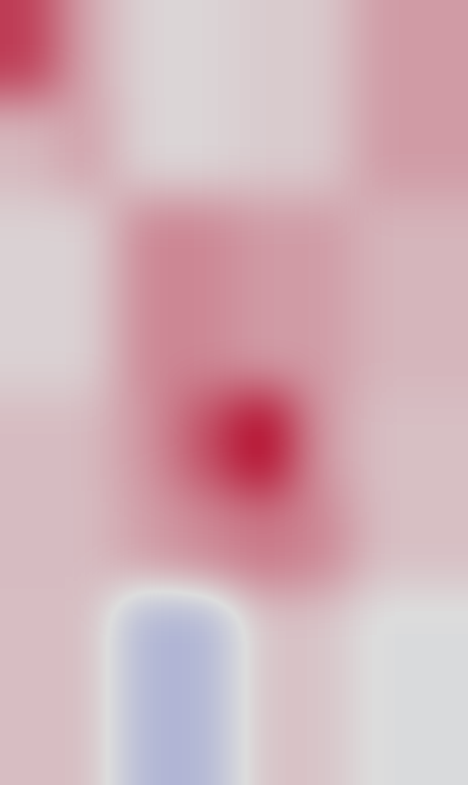
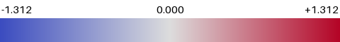
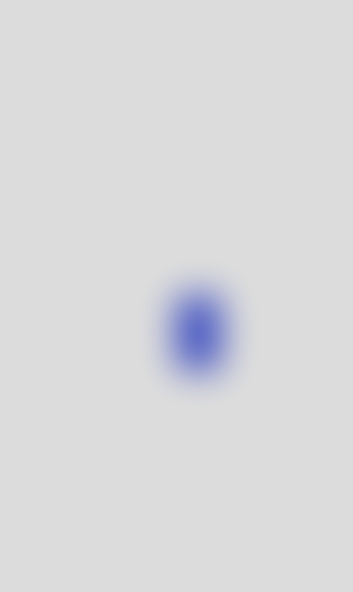

单图 AIGC 可解释结果
AIGC Confidence = 0.7469
Platt score 0.6363 · raw logit +9.3865 · 773086_759921_architecture_mlp_normalized
输入
局部 patch 贡献
多尺度 raw-logit 贡献


贡献叠加图
输入高频强度（非模型输出）
模型 wavelet-only 高频贡献


wavelet-only 贡献叠加图
六类失真下的置信度轨迹
分支反事实贡献
解释边界
Primary map uses raw_logit_contribution = logit(original) - logit(region occluded), avoiding sigmoid saturation. Probability deltas are retained. Refined regions are selected only by coarse absolute raw-logit contribution. This is a local counterfactual, not causal proof.
独立热图使用 raw-logit，避免 sigmoid 饱和隐藏证据变化。蓝色拉低 / 红色抬高 AIGC logit。输入纹理图与 checkpoint 无关；wavelet-only 图固定其他 fusion 特征，只允许模型内部 wavelet similarity 变化。完整数值：explanation.json；逐区域：patches.jsonl。